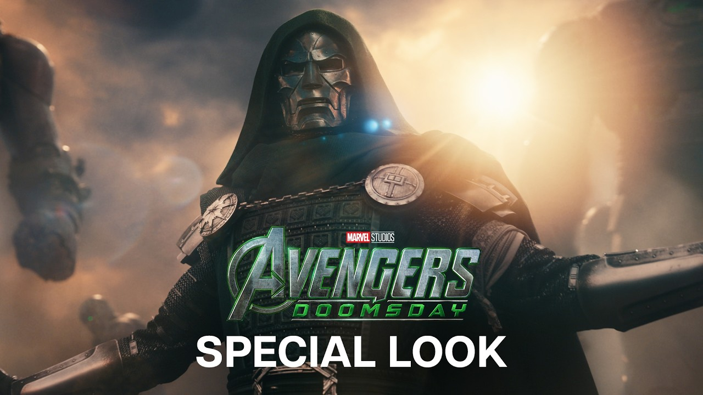

Kuro Games
Wuthering Waves
- Situs resmi Kuro Games. Pengumuman dan materi promosi, termasuk gambar resolusi tinggi.
- Steam Workshop berisi wallpaper yang diunggah langsung oleh pemain, dengan tautan ke materi asli.
Link ke sumber resmi, plus panduan gratis yang bisa kamu baca langsung di situs ini.
Semua wallpaper di bawah milik masing-masing publisher. Klik untuk membuka galeri resmi mereka, lalu unduh langsung dari sana supaya resolutionsnya tetap HD dan usage-nya sesuai hak cipta.
Wuthering Waves
Genshin Impact
Honkai: Star Rail
Zenless Zone Zero
Arknights: Endfield
Neverness to Everness

Marvel Studios
Semua panduan Starwise ditulis sendiri dan gratis dibaca langsung di halaman ini, tanpa perlu unduh file.
Pity 90 pull, rotasi tim, tips resin harian, dan kesalahan pemula.
Baca gratis →Pity 80 pull, sistem Echo, farming, dan rotasi karakter.
Baca gratis →Warp pity, Skill Point, farming XP, dan pengelolaan Stellar Jade.
Baca gratis →Signal pity, Bangboo, dek rotasi, dan farming Attrition.
Baca gratis →Operator, sistem AIC, tips combat, dan referensi materi resmi.
Baca gratis →Combat supernatural urban, sistem karakter, dan tips awal.
Baca gratis →Urutan nonton MCU per fase dan platform legal.
Baca gratis →Tonton anime dan film lewat layanan berbayar ini. Hindari situs streaming ilegal.
Pustaka anime terbesar dan paling cepat rilis episode. Banyak judul Fall 2026 tayang di sini.
Menyazon sebagian judul musiman, termasuk The Apothecary Diaries.
Film MCU dan beberapa judul anime musiman, tergantung wilayah.
Trailer dan character demo resmi, dikelompokkan per game.
Starwise tidak meng-host ulang file wallpaper milik publisher. Halaman ini hanya mengarahkan kamu ke galeri resmi masing-masing, supaya file yang kamu unduh tetap resolusi penuh dan penggunaannya sesuai ketentuan hak cipta.